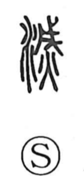

滅

Kun: horobiru, horobosu, kieru | On: metsu
to destroy ・ ruin ・ to perish ・ to extinguish
Explanation
滅 is a phono-semantic character. In the older graph, the element 戊—originally a broad ritual axe—combines with the sign for fire to show a sacred act of pressing down and quelling a blaze, that is, extinguishing it. From this image of subduing fire, the word naturally came to mean “to destroy.” The Book of Odes (Minor Odes, “First Month”) already uses it in this sense, speaking of the ruin brought upon Zhou. When the water radical was later added, the form 滅 took on the general meanings “destroy, ruin; perish; be extinguished, vanish.” The on reading metsu reflects the phonetic element and survives in compounds such as meppō.